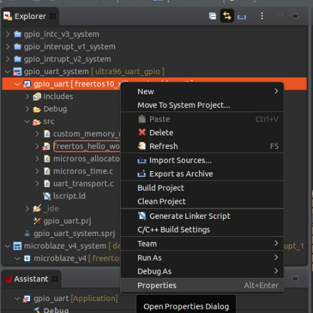
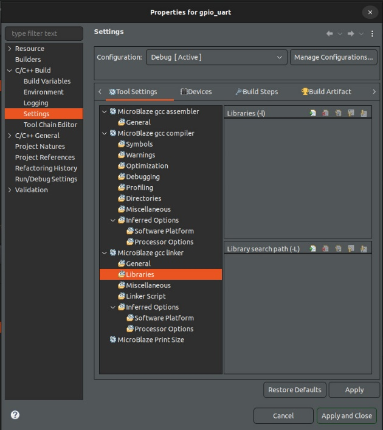
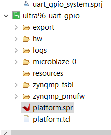
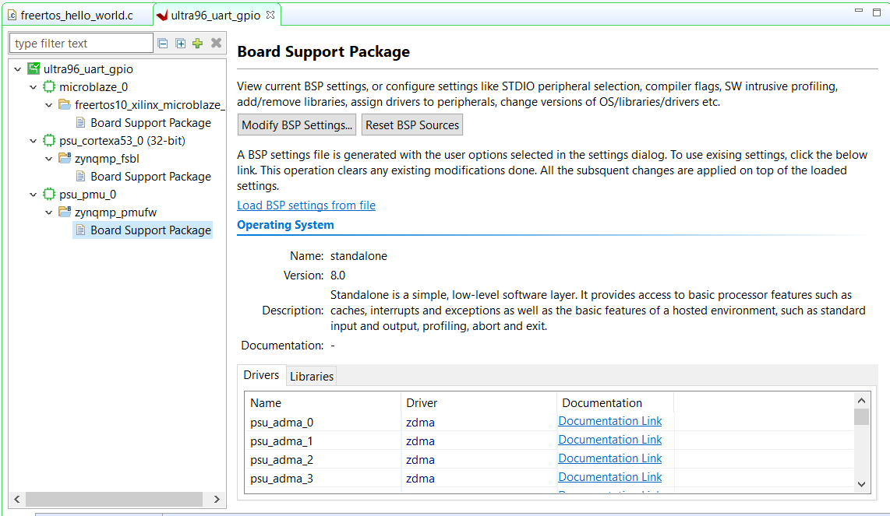
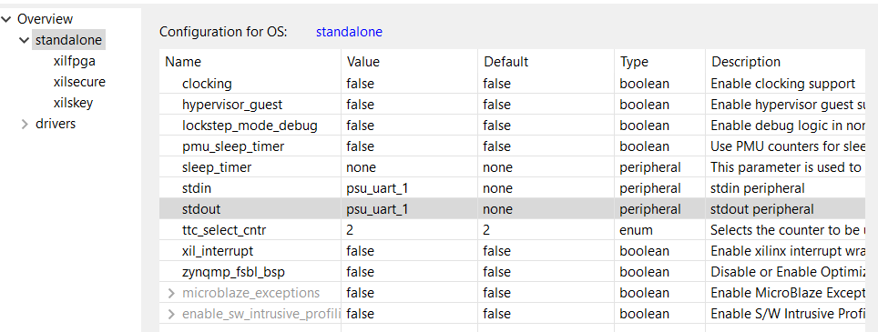
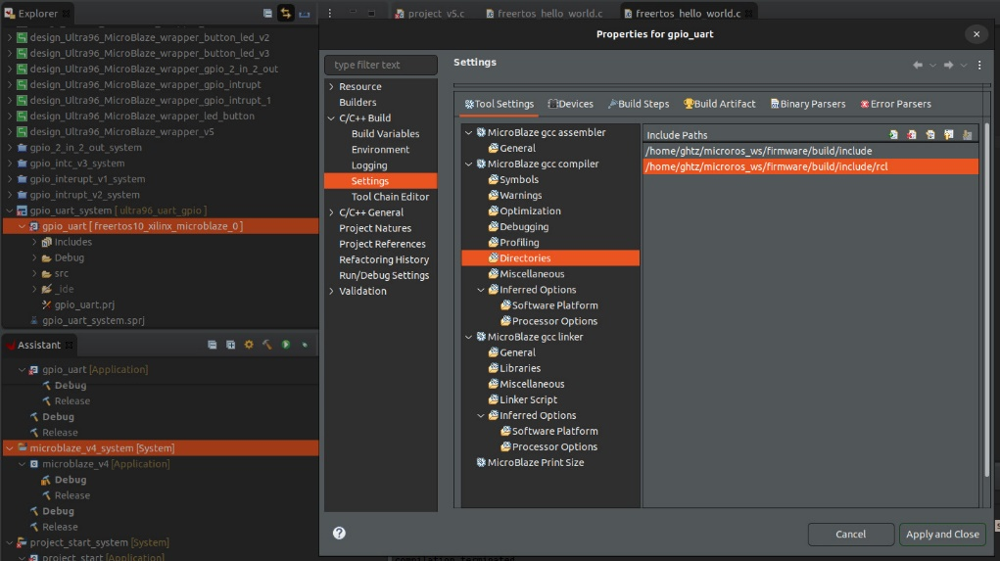

How to create ROS project in vitis
Step 1: Copy ROS .c Files to src Directory
- Copy necessary .c files (e.g., allocator) to the
srcdirectory. - These files contain functions for micro-ROS, and the main files to run the program.
Files:
All files needed to run uROS.
main.c
custom_memory_manager.c
microros_allocator.c
microros_time.c
uart_transport.c
Step 2: Create a Link for the micro-ROS Directories
- Go to the properties of the project.
 - Navigate to:
C/C++ Build -> Settings -> MicroBlaze gcc compiler -> Directories.

- Click "Add" (top right corner of the screen).
- Insert the link to the
microblaze_wsinclude file:/<path>/microros_ws/firmware/build/include.
Step 3: Create a Link for the .a File
- Go to the properties of the project (same as before).
- Navigate to:
C/C++ Build -> Settings -> MicroBlaze gcc linker -> Libraries. - There are two boxes there:
- Under "Library search path," click "Add" (top right corner of the lower box).
 - Insert the path to the
.afile (the folder of the.afile):/<path>/microros_ws/firmware/build/. - Under "Libraries (-l)," click "Add" (top right corner of the upper box) and add the flag
microros.
- Under "Library search path," click "Add" (top right corner of the lower box).
Step 4: Configure UART for microblaze
- Ensure the input to the microblaze is the UART:
- Under the design wrapper/platform (green box), go to
platform.spr.
 - Navigate to:
Board Support Package -> Modify BSP Settings.
 - Go to
Overview -> Standaloneand changestdinandstdouttopsu_uart_1(and click OK).

- Under the design wrapper/platform (green box), go to
Step 5: Address Problem with micro-ROS Directories
- Due to changes in the directory structure of micro-ROS, there might be problems building the code. Additional directories need to be included for the compiler.
- Go to the properties of the project.
- Navigate to:
C/C++ Build -> Settings -> MicroBlaze gcc compiler -> Directories. - Click "Add" (top right corner of the screen). 
- Insert the link to the first directory in the tree for each missing file. For example:
/<path>/microros_ws/firmware/build/include/rcl.- The file itself is at:
/<path>/microros_ws/firmware/build/include/rcl/rcl/rcl.h.
- The file itself is at: